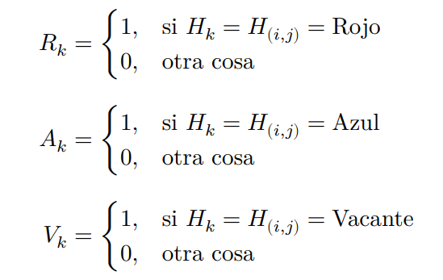

Proyecto para el curso de Procesos Estocasticos de la Licenciatura en Estadistica
El modelo de Schelling fue originalmente propuesto para estudiar cómo decisiones locales basadas en preferencias individuales pueden generar patrones de segregación a gran escala dentro de un sistema social. Esta lógica de interacción espacial y ajuste iterativo presenta una conexión natural con las cadenas de Markov, ya que la evolución del sistema puede formalizarse como un proceso estocástico con transiciones entre estados y posibles configuraciones absorbentes.
En este trabajo, reinterpretamos el modelo desde una perspectiva de negocio en mercados financieros y ecosistemas fintech. Consideramos una grilla de 20×20 (400 celdas), donde cada celda representa un producto financiero, plataforma de inversión o nicho de mercado, y puede estar ocupada por un cliente del segmento Tradicional (rojo), Fintech/Neobank (azul), o encontrarse vacante lo que representa espacios de mercado disponibles para adopción o migración de clientes.
Cada agente representa un cliente o inversor que toma decisiones de localización influenciado por efectos de red y afinidad de segmento. Los “vecinos” de una celda se interpretan como clientes con perfiles similares dentro del mismo ecosistema de producto, que generan referencias, confianza, engagement y externalidades positivas propias de los mercados con efectos de red.
Cada cliente posee un parámetro de tolerancia τ, que representa el mínimo de masa crítica de clientes similares requerida para permanecer en un producto sin abandonarlo (churn threshold). Un agente está “satisfecho” si en su celda actual se cumple que el número de vecinos del mismo segmento es mayor o igual a τ. En caso contrario, el cliente se considera “insatisfecho” y se convierte en candidato a migrar hacia otro producto donde su perfil esté mejor representado, dejando vacante su celda anterior.
La dinámica del modelo consiste en identificar agentes insatisfechos y permitirles migrar hacia celdas vacantes donde puedan maximizar su afinidad de segmento, siempre que el nuevo espacio supere el umbral τ. Este proceso se repite hasta alcanzar un equilibrio donde ya no se observan migraciones adicionales y el sistema converge a una configuración estable de mercado.
Los objetivos del trabajo son:
(1) estudiar cómo surgen patrones de segmentación y concentración de clientes en productos financieros a partir de decisiones locales.
(2) analizar la relación entre τ y el grado de especialización de nicho de mercado.
(3) formalizar la evolución del ecosistema como una cadena de Markov, caracterizando estados absorbentes como configuraciones de mercado estables donde no existe switching adicional de clientes.
Las preguntas centrales que buscamos responder son cómo influye el umbral de tolerancia τ en la concentración de segmentos por producto, en qué medida determina la existencia y probabilidad de alcanzar un equilibrio absorbente de mercado, y cuántos pasos requiere el sistema —en promedio— para converger a un estado de retención estable. Asimismo, analizamos el proceso de migración para construir y estudiar la matriz de switching entre segmentos, un indicador clave en modelos de adopción competitiva de productos financieros.
Grilla NxN = 20x20. 400 celdas en total. Podemos definir el siguiente conjunto finito de todas las celdas posibles a través del producto cartesiano \( Λ = {1, ..., 20} × {1, ..., 20} \)
Luego podemos considerar el conjunto finito de colores posibles, donde cada celda puede ser \( 𝑋 = {𝑅, 𝐴, 𝑉 } \) (Rojo, Azul, Vacante)
Podemos ver el Espacio de Estados como una función que asigna a cada celda posible un color:
\( 𝑆 = 𝑋^Λ = {𝑠 ∶ Λ → 𝑋}. Donde 𝑠(𝑖, 𝑗) ∈ 𝑋 ∀ (𝑖, 𝑗) ∈ Λ \)
Podemos definir también: \( 𝑆 = {𝑠 ∈ 𝑋^Λ ∶ #𝑅 = 180, #𝐴 = 180, #𝑉 = 40} \)
En cuanto a la cardinalidad del este Espacio de Estados, tenemos que \( 3^{(20𝑥20)} \) combinaciones posibles de grillas de 20x20 que tienen 3 colores. Es decir \( #𝑆 = 3^{(20𝑥20)} = 3^{400} \)
El espacio de estados tiene estados posibles que son configuraciones de toda la grilla. Cada configuración que puede tomar la grilla es un estado del espacio de estados.
Luego tenemos 100% = 400 es el total de celdas en la grilla, por lo que usando regla de tres, el 10% = 40 son celdas vacantes. Luego tenemos 400-40=360 celdas disponibles para celdas rojas y azules, sabemos que la proporción debe ser 50/50 por lo que tenemos 180 celdas rojas y 180 celdas azules. El espacio de estados se reduce a las grillas que cumplan esta condición, pero de todas formas sigue siendo un espacio de estados muy grande.
Para contar el número de vecinos de igual color que la celda central (i,j) definimos la siguiente función que va del conjunto de celdas a los reales entre \( [0, 1], 𝑆 ∶ 𝑆𝑋𝑁^2 → [0, 1] \) Esta función será nuestra regla de decisión para decidir si un agente esta o no insatisfecho.
Entonces: \tau = 𝑥% indica que tenemos que tener al menos x% (100*x%) agentes similares de vecinos para estar satisfechos como agente principal. \( 𝑆(𝐻t, 𝑖, 𝑗) \leq \tau \) tenemos que el agente esta insatisfecho. \( 0 ≤ 𝑆(𝐻𝑡, 𝑖, 𝑗) ≤ 1 \ y \ 0 ≤ 𝜏 ≤ 1 \)
Entonces notemos que los vecinos se pueden definir de la siguiente forma:
| (i-1, j-1) | (i-1, j) | (i-1, j+1) |
| (i, j-1) | (i, j) | (i, j+1) |
| (i+1, j-1) | (i+1, j) | (i+1, j+1) |
Definimos las siguienes funciones indicadores que serviran para contar el numero de vecinos del mismo color y la proporcion de estos

Indicatrices
Ahora definimos los siguientes conjuntos de índices:
F = {i-1, i, i+1}
C = {j-1, j, j+1}
Definimos la siguiente expresión para contar el número de vecinos de igual color
\( \left( \sum_{c \in C} \sum_{f \in F} R_k \right) - 1 \)
Ponemos él -1 porque en la doble sumatoria estamos contando también a la celda central, la (i,j).
Definimos la siguiente expresión para contar la proporción de vecinos de igual color
\( \frac{ \left( \sum_{c \in C} \sum_{f \in F} R_k \right) - 1 }{ \left( \sum_{c \in C} \sum_{f \in F} R_k \right) - 1 + \left( \sum_{c \in C} \sum_{f \in F} A_k \right) - 1 + \left( \sum_{c \in C} \sum_{f \in F} V_k \right) - 1} = \frac{ \left( \sum_{c \in C} \sum_{f \in F} R_k \right) - 1 }{\left( \sum_{c \in C} \sum_{f \in F} R_k \right) + \left( \sum_{c \in C} \sum_{f \in F} A_k \right) + \left( \sum_{c \in C} \sum_{f \in F} V_k \right) - 3} \)
Ponemos él -3 (o 3 veces el -1) para no considerar la celda centra (i,j)
Entonces la regla de decisión es que si \( 𝑆 < \tau \), entonces el agente esta insatisfecho (el número de vecinos de igual color es menor que el número de vecinos mínimos de igual color que toleraríamos para estar satisfechos), por lo que el agente debe moverse.
En cuanto a las transiciones de la cadena \( 𝐻_𝑡 → 𝐻_{𝑡+1} \), pasar de una configuración de la grilla a otra configuración de la grilla es que haya al menos un agente insatisfecho, el cual sera seleccionado de forma aleatoria y se moverá a la celda que maximice el número de vecinos del mismo color, notar que bajo esta lógica, el agente puede moverse a esta celda maximizadora, pero no estar satisfecho, lo ideal es que el agente quede satisfecho al moverse, pero no siempre será posible.
Recordando que las notaciones que estamos usando para la celda donde se encuentra al agente: \( 𝑘 = (𝑖, 𝑗) \) y las celdas que no son donde se encuentra el agente \( 𝑘′ ≠ 𝑘 => (𝑖′, 𝑗′) ≠ (𝑖, 𝑗) \)
Podemos definir el conjunto \( U_t = {k' \in U_t / k -> k' } \) como el conjunto de celdas vacantes a las que se puede mover un agente insatisfecho que se encuentra en la celda k en el momento t de la grilla. Luego el conjunto \( V_t = {k' \in V_t / S_{k'} \geq S_k } \). Es el conjunto de celdas que maximizan el numero de vecinos del mismo color del agente con respecto a la celda en la que se encuentra en el momento t. Buscaremos movernos a \( max(S_{k'}) \), la celda \( k' \) que maximiza el numero de vecinos del mismo color, y por lo tanto se cumple que \( max(S_{k'}) > S_k \). Notar que bajo esta definición se cumple que \( V_t \subset U_t \).
Pero debemos tener en cuenta que puede ocurrir tres casos para el agente en la posición k:
1) Que de \( 𝑈_𝑡 \) exista al menos un elemento en \( 𝑉_𝑡 \), del cual buscaremos el máximo de \( 𝑉_𝑡 \) y el agente se moverá para maximizar su numero de vecinos de igual color.
2) Que de \( 𝑈_𝑡 \) exista al menos un elemento en \( 𝑉_𝑡 \), pero se cumple que estos elementos dan una numero de agentes de igual color que es igual o menor con respecto a la posicion actual en la que se encuentra el agente, en este caso el agente tambien se mueve a cualquiera de las celdas que dan un numero de agentes del mismo color equivalente a la cantidad que tiene con respecto a la celda en la que esta y ignora las que dan un numero menor de agentes de igual color.
3) Que de \( 𝑈_𝑡 \) no exista al menos un elemento en \( 𝑉_𝑡 \), es decir todas las celdas a las que se pueden mover el agente dan un numero de vecinos de igual color menor con respecto a la que se encuentra actualmente, en este caso el agente no se mueve y se queda en la posicion en la que esta.
Este ultimo caso es importante porque dado que la celda actual es la que maximiza el numero de agentes de igual color (aunque esto no implica necesariamente que el agente este satisfecho), y no hay otra celda que lo haga, si esto ocurre para todos los agentes insatisfechos de la grilla entonces decimos que la cadena entro en un estado absorbente y la grilla se quedara con esa configuración por un tiempo infinito
Si todos los agentes maximizan el número de vecinos del mismo color en la celda en la que están, entonces ya no hay más movimientos y la grilla queda segregada, quedando en este estado por siempre, por lo que tenemos un estado absorbente. Notar que no necesariamente los agentes que están maximizando el número de vecinos de igual color, están satisfechos, eso dependerá del nivel de tolerancia \( \tau \) definido.
Si lo queremos formalizar decimos que una configuracion de la grilla 𝑖 es absorbente si solo si, no existe ningún movimiento que suba la satisfacción de cualquier agent
\( p_{ii} = 1 \iff \forall \ k' \in H_t, S_{k'} \leq S_k, \ k \neq k' \)
siendo k la celda actual en la que se encuentra el agente en el momento t de la grilla.
Notar que los estados absorbentes a los que puede entrar la grilla son varios, definidos según el número de agentes que maximizan su número de vecinos del mismo color, pero se diferencian en que algunos pueden estar satisfechos y otros no, puede ocurrir que todos los agentes en el momento t de la grilla estén satisfechos al maximizar su número de vecinos adyacentes \( argmax(S(i,j)) = (i', j') \) y \( S(i', j') \geq \tau \), que algunos estén satisfechos y otros no, o que todos estén insatisfechos \( argmax(S(i,j)) = (i', j') \) y \( S(i', j') < \tau \), todo esto dependerá del nivel de tolerancia \( \tau \).
Seudocodigo usando el paquete algorithm.
El criterio de parada es que todos los agentes estén maximizando el numero de vecinos de igual color en la posición en la que están. Si 𝑈𝑡 = ∅, en la simulación es que la lista donde almacenamos los estados movibles sea vacía. El criterio de parada depende de cierta manera del parámetro de tolerancia porque para valores mas bajos de tolerancia, para estar satisfechos aceptamos pocos vecinos del mismo color y esto repercute en que el numero de transiciones a estados maximizadores sea menor, porque habrá muchos agente satisfechos, lo que causa que la cadena llegue mas rápido al criterio de parada. En el otro caso, si el parámetro de tolerancia es mas alto, exigimos muchos vecinos del mismo color para estar satisfechos, entonces el numero de transiciones a estados maximizadores sera mayor, porque habrá mas agente insatisfechos que se moverán, lo que causa que la cadena llegue mas lento al criterio de parada.
El primer bloque de código arma un “juego de barrios” en una cuadrícula: primero crea una grilla de 20x20 donde cada casita puede estar ocupada por un vecino rojo, un vecino azul o quedar vacía. Luego, para cada vecino, mira solo el mini-barrio 3x3 que lo rodea y calcula qué proporción de sus vecinos son de su mismo color; si esa proporción es menor que un nivel de tolerancia (tau), el vecino se considera insatisfecho. Los insatisfechos miran todas las casas vacías y “simulan” mudarse a cada una para ver en cuál tendrían más vecinos de su mismo tipo, y eligen al azar una de esas posiciones óptimas (que puede dejarlos satisfechos o no). El código va repitiendo este proceso paso a paso, moviendo de a un vecino insatisfecho por vez, y guardando fotos intermedias de cómo queda el mapa. Después corre la simulación para distintos valores de tau y genera un gráfico tipo mosaico donde se ve, para cada tau y para distintos pasos de tiempo, cómo los barrios se van reordenando y qué tan mezclados o segregados quedan los rojos y los azules.
Utilizamos las funciones ya definidas para empezar a hacer los plots, donde en las ejecuciones para distintos valores de tau (nivel de tolerancia) obtuvimos los siguientes graficos: